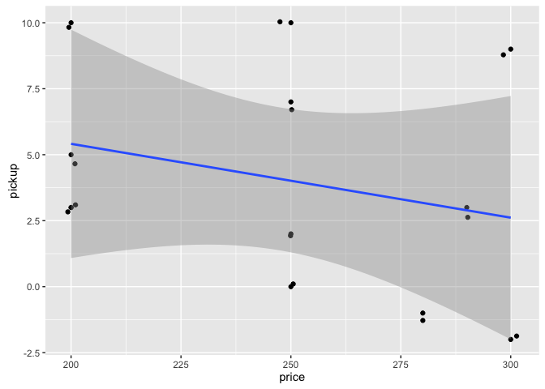

runDir('../CodeExamples/x0A_Working_with_R_and_other_tools',
'../SQLExample')
[1] "############################### start 226 Fri Jun 17 10:29:12 2016"
[1] "##### running ../CodeExamples/x0A_Working_with_R_and_other_tools/00226_informalexample_A.1_of_section_A.1.5.R"
[1] "##### in directory ../SQLExample"
> # informalexample A.1 of section A.1.5
> # (informalexample A.1 of section A.1.5) : Working with R and other tools : Installing the tools : R resources
>
> install.packages('ctv',repos='https://cran.r-project.org')
The downloaded binary packages are in
/var/folders/7q/h_jp2vj131g5799gfnpzhdp80000gn/T//RtmpiXUnN0/downloaded_packages
> library('ctv')
> # install.views('TimeSeries') # can take a LONG time
>
[1] "############################### end 226 Fri Jun 17 10:29:21 2016"
[1] "############################### start 227 Fri Jun 17 10:29:21 2016"
[1] "##### running ../CodeExamples/x0A_Working_with_R_and_other_tools/00227_example_A.1_of_section_A.2.R"
[1] "##### in directory ../SQLExample"
> # example A.1 of section A.2
> # (example A.1 of section A.2) : Working with R and other tools : Starting with R
> # Title: Trying a few R commands
>
> 1
[1] 1
> ## [1] 1
> 1/2
[1] 0.5
> ## [1] 0.5
> 'Joe'
[1] "Joe"
> ## [1] "Joe"
> "Joe"
[1] "Joe"
> ## [1] "Joe"
> "Joe"=='Joe'
[1] TRUE
> ## [1] TRUE
> c()
NULL
> ## NULL
> is.null(c())
[1] TRUE
> ## [1] TRUE
> is.null(5)
[1] FALSE
> ## [1] FALSE
> c(1)
[1] 1
> ## [1] 1
> c(1,2)
[1] 1 2
> ## [1] 1 2
> c("Apple",'Orange')
[1] "Apple" "Orange"
> ## [1] "Apple" "Orange"
> length(c(1,2))
[1] 2
> ## [1] 2
> vec <- c(1,2)
> vec
[1] 1 2
> ## [1] 1 2
>
[1] "############################### end 227 Fri Jun 17 10:29:21 2016"
[1] "############################### start 228 Fri Jun 17 10:29:21 2016"
[1] "##### running ../CodeExamples/x0A_Working_with_R_and_other_tools/00228_informalexample_A.2_of_section_A.2.1.R"
[1] "##### in directory ../SQLExample"
> # informalexample A.2 of section A.2.1
> # (informalexample A.2 of section A.2.1) : Working with R and other tools : Starting with R : Primary features of R
>
> x <- 2
> x < - 3
[1] FALSE
> ## [1] FALSE
> print(x)
[1] 2
> ## [1] 2
>
[1] "############################### end 228 Fri Jun 17 10:29:21 2016"
[1] "############################### start 229 Fri Jun 17 10:29:21 2016"
[1] "##### running ../CodeExamples/x0A_Working_with_R_and_other_tools/00229_example_A.2_of_section_A.2.1.R"
[1] "##### in directory ../SQLExample"
> # example A.2 of section A.2.1
> # (example A.2 of section A.2.1) : Working with R and other tools : Starting with R : Primary features of R
> # Title: Binding values to function arguments
>
> divide <- function(numerator,denominator) { numerator/denominator }
> divide(1,2)
[1] 0.5
> ## [1] 0.5
> divide(2,1)
[1] 2
> ## [1] 2
> divide(denominator=2,numerator=1)
[1] 0.5
> ## [1] 0.5
> divide(denominator<-2,numerator<-1) # yields 2, a wrong answer
[1] 2
> ## [1] 2
>
[1] "############################### end 229 Fri Jun 17 10:29:21 2016"
[1] "############################### start 230 Fri Jun 17 10:29:21 2016"
[1] "##### running ../CodeExamples/x0A_Working_with_R_and_other_tools/00230_example_A.3_of_section_A.2.1.R"
[1] "##### in directory ../SQLExample"
> # example A.3 of section A.2.1
> # (example A.3 of section A.2.1) : Working with R and other tools : Starting with R : Primary features of R
> # Title: Demonstrating side effects
>
> x<-1
> good <- function() { x <- 5}
> good()
> print(x)
[1] 1
> ## [1] 1
> bad <- function() { x <<- 5}
> bad()
> print(x)
[1] 5
> ## [1] 5
>
[1] "############################### end 230 Fri Jun 17 10:29:21 2016"
[1] "############################### start 231 Fri Jun 17 10:29:21 2016"
[1] "##### running ../CodeExamples/x0A_Working_with_R_and_other_tools/00231_example_A.4_of_section_A.2.1.R"
[1] "##### in directory ../SQLExample"
> # example A.4 of section A.2.1
> # (example A.4 of section A.2.1) : Working with R and other tools : Starting with R : Primary features of R
> # Title: R truth tables for Boolean operators
>
> c(T,T,F,F) == c(T,F,T,F)
[1] TRUE FALSE FALSE TRUE
> ## [1] TRUE FALSE FALSE TRUE
> c(T,T,F,F) & c(T,F,T,F)
[1] TRUE FALSE FALSE FALSE
> ## [1] TRUE FALSE FALSE FALSE
> c(T,T,F,F) | c(T,F,T,F)
[1] TRUE TRUE TRUE FALSE
> ## [1] TRUE TRUE TRUE FALSE
>
[1] "############################### end 231 Fri Jun 17 10:29:21 2016"
[1] "############################### start 232 Fri Jun 17 10:29:21 2016"
[1] "##### running ../CodeExamples/x0A_Working_with_R_and_other_tools/00232_informalexample_A.3_of_section_A.2.1.R"
[1] "##### in directory ../SQLExample"
> # informalexample A.3 of section A.2.1
> # (informalexample A.3 of section A.2.1) : Working with R and other tools : Starting with R : Primary features of R
>
> add <- function(a,b) { a + b}
> add(1,2)
[1] 3
> ## [1] 3
>
[1] "############################### end 232 Fri Jun 17 10:29:21 2016"
[1] "############################### start 233 Fri Jun 17 10:29:21 2016"
[1] "##### running /Users/johnmount/Documents/work/PracticalDataScienceWithR/zmPDSwR/RunExamples/replacements/00233_informalexample_A.4_of_section_A.2.1.R"
[1] "##### in directory ../SQLExample"
> # informalexample A.4 of section A.2.1
> # (informalexample A.4 of section A.2.1) : Working with R and other tools : Starting with R : Primary features of R
>
> # In knitr/Markdown we need to catch the error.
>
> tryCatch(add(1,'fred'),
error=function(x) print(x))
<simpleError in a + b: non-numeric argument to binary operator>
> ## Error in a + b : non-numeric argument to binary operator
>
[1] "############################### end 233 Fri Jun 17 10:29:21 2016"
[1] "############################### start 234 Fri Jun 17 10:29:21 2016"
[1] "##### running ../CodeExamples/x0A_Working_with_R_and_other_tools/00234_example_A.5_of_section_A.2.1.R"
[1] "##### in directory ../SQLExample"
> # example A.5 of section A.2.1
> # (example A.5 of section A.2.1) : Working with R and other tools : Starting with R : Primary features of R
> # Title: Call-by-value effect
>
> vec <- c(1,2)
> fun <- function(v) { v[[2]]<-5; print(v)}
> fun(vec)
[1] 1 5
> ## [1] 1 5
> print(vec)
[1] 1 2
> ## [1] 1 2
>
[1] "############################### end 234 Fri Jun 17 10:29:21 2016"
[1] "############################### start 235 Fri Jun 17 10:29:21 2016"
[1] "##### running ../CodeExamples/x0A_Working_with_R_and_other_tools/00235_informalexample_A.5_of_section_A.2.2.R"
[1] "##### in directory ../SQLExample"
> # informalexample A.5 of section A.2.2
> # (informalexample A.5 of section A.2.2) : Working with R and other tools : Starting with R : Primary R data types
>
> vec <- c(2,3)
> vec[[2]] <- 5
> print(vec)
[1] 2 5
> ## [1] 2 5
>
[1] "############################### end 235 Fri Jun 17 10:29:21 2016"
[1] "############################### start 236 Fri Jun 17 10:29:21 2016"
[1] "##### running ../CodeExamples/x0A_Working_with_R_and_other_tools/00236_example_A.6_of_section_A.2.2.R"
[1] "##### in directory ../SQLExample"
> # example A.6 of section A.2.2
> # (example A.6 of section A.2.2) : Working with R and other tools : Starting with R : Primary R data types
> # Title: Examples of R indexing operators
>
> x <- list('a'=6,b='fred')
> names(x)
[1] "a" "b"
> ## [1] "a" "b"
> x$a
[1] 6
> ## [1] 6
> x$b
[1] "fred"
> ## [1] "fred"
> x[['a']]
[1] 6
> ## $a
> ## [1] 6
>
> x[c('a','a','b','b')]
$a
[1] 6
$a
[1] 6
$b
[1] "fred"
$b
[1] "fred"
> ## $a
> ## [1] 6
> ##
> ## $a
> ## [1] 6
> ##
> ## $b
> ## [1] "fred"
> ##
> ## $b
> ## [1] "fred"
>
[1] "############################### end 236 Fri Jun 17 10:29:21 2016"
[1] "############################### start 237 Fri Jun 17 10:29:21 2016"
[1] "##### running ../CodeExamples/x0A_Working_with_R_and_other_tools/00237_example_A.7_of_section_A.2.2.R"
[1] "##### in directory ../SQLExample"
> # example A.7 of section A.2.2
> # (example A.7 of section A.2.2) : Working with R and other tools : Starting with R : Primary R data types
> # Title: R’s treatment of unexpected factor levels
>
> factor('red',levels=c('red','orange'))
[1] red
Levels: red orange
> ## [1] red
> ## Levels: red orange
> factor('apple',levels=c('red','orange'))
[1] <NA>
Levels: red orange
> ## [1] <NA>
> ## Levels: red orange
>
[1] "############################### end 237 Fri Jun 17 10:29:21 2016"
[1] "############################### start 238 Fri Jun 17 10:29:21 2016"
[1] "##### running ../CodeExamples/x0A_Working_with_R_and_other_tools/00238_example_A.8_of_section_A.2.2.R"
[1] "##### in directory ../SQLExample"
> # example A.8 of section A.2.2
> # (example A.8 of section A.2.2) : Working with R and other tools : Starting with R : Primary R data types
> # Title: Confirm lm() encodes new strings correctly.
>
> d <- data.frame(x=factor(c('a','b','c')),
y=c(1,2,3))
> m <- lm(y~0+x,data=d) # Note: 1
> print(predict(m,
newdata=data.frame(x='b'))[[1]]) # Note: 2
[1] 2
> # [1] 2
> print(predict(m,
newdata=data.frame(x=factor('b',levels=c('b'))))[[1]]) # Note: 3
[1] 2
> # [1] 2
>
> # Note 1:
> # Build a data frame and linear model mapping
> # a,b,c to 1,2,3.
>
> # Note 2:
> # Show that model gets correct prediction for
> # b as a string.
>
> # Note 3:
> # Show that model gets correct prediction for
> # b as a factor, encoded with a different number of
> # levels. This shows that lm() is correctly treating
> # factors as strings.
>
[1] "############################### end 238 Fri Jun 17 10:29:21 2016"
[1] "############################### start 239 Fri Jun 17 10:29:21 2016"
[1] "##### running ../CodeExamples/x0A_Working_with_R_and_other_tools/00239_example_A.9_of_section_A.2.3.R"
[1] "##### in directory ../SQLExample"
> # example A.9 of section A.2.3
> # (example A.9 of section A.2.3) : Working with R and other tools : Starting with R : Loading data from HTTPS sources
> # Title: Loading UCI car data directly from GitHub using HTTPS
>
> require(RCurl) # Note: 1
Loading required package: RCurl
Loading required package: bitops
> urlBase <-
'https://raw.githubusercontent.com/WinVector/zmPDSwR/master/' # Note: 2
> mkCon <- function(nm) { # Note: 3
textConnection(getURL(paste(urlBase,nm,sep='/')))
}
> cars <- read.table(mkCon('car.data.csv'), # Note: 4
sep=',',header=T,comment.char='')
> # Note 1:
> # Bring in the RCurl library for more connection
> # methods.
>
> # Note 2:
> # Form a valid HTTPS base URL for raw access to
> # the GitHub repository.
>
> # Note 3:
> # Define a function that wraps a URL path
> # fragment into a usable HTTPS connection.
>
> # Note 4:
> # Load the car data from GitHub over
> # HTTPS.
>
[1] "############################### end 239 Fri Jun 17 10:29:22 2016"
[1] "############################### start 240 Fri Jun 17 10:29:22 2016"
[1] "##### running ../CodeExamples/x0A_Working_with_R_and_other_tools/00240_example_A.10_of_section_A.3.2.R"
[1] "##### in directory ../SQLExample"
> # example A.10 of section A.3.2
> # (example A.10 of section A.3.2) : Working with R and other tools : Using databases with R : Starting with SQuirreL SQL
> # Title: Reading database data into R
>
> install.packages('RJDBC',repos='https://cran.r-project.org') # Note: 1
The downloaded binary packages are in
/var/folders/7q/h_jp2vj131g5799gfnpzhdp80000gn/T//RtmpiXUnN0/downloaded_packages
> library('RJDBC') # Note: 2
Loading required package: DBI
Loading required package: rJava
Attaching package: 'rJava'
The following object is masked from 'package:RCurl':
clone
> drv <- JDBC("org.h2.Driver","h2-1.3.170.jar",identifier.quote="'") # Note: 3
> conn <- dbConnect(drv,"jdbc:h2:h2demodb_h2","u","u") # Note: 4
> d <- dbGetQuery(conn,"SELECT * FROM example_table") # Note: 5
> print(d) # Note: 6
STATIDID NAME
1 1 Joe
2 2 Fred
> ## STATUSID NAME
> ## 1 1 Joe
> ## 2 2 Fred # Note: 7
>
> # Note 1:
> # Install the RJDBC package from the CRAN
> # package repository.
>
> # Note 2:
> # Load the RJDBC library.
>
> # Note 3:
> # Use the RJDBC library to build a database
> # driver.
>
> # Note 4:
> # Use the database driver to build a database
> # connection. In our SQuirreL SQL example, we used
> # the path /Users/johnmount/Downloads/h2demodb_h2.
> # So the path fragment given here (h2demodb_h2)
> # works only if R is working in the directory
> # /Users/johnmount/Downloads. You would alter all of
> # these paths and URLs to work for your own
> # directories.
>
> # Note 5:
> # Run a SQL select query using the database
> # connection to populate a data frame.
>
> # Note 6:
> # Print the result data frame.
>
> # Note 7:
> # The database table as an R data frame.
>
[1] "############################### end 240 Fri Jun 17 10:29:26 2016"
[1] "############################### start 241 Fri Jun 17 10:29:26 2016"
[1] "##### running ../CodeExamples/x0A_Working_with_R_and_other_tools/00241_example_A.11_of_section_A.3.4.R"
[1] "##### in directory ../SQLExample"
> # example A.11 of section A.3.4
> # (example A.11 of section A.3.4) : Working with R and other tools : Using databases with R : An example SQL data transformation task
> # Title: Loading an Excel spreadsheet
>
> library(gdata)
gdata: read.xls support for 'XLS' (Excel 97-2004) files ENABLED.
gdata: read.xls support for 'XLSX' (Excel 2007+) files ENABLED.
Attaching package: 'gdata'
The following object is masked from 'package:stats':
nobs
The following object is masked from 'package:utils':
object.size
The following object is masked from 'package:base':
startsWith
> bookings <- read.xls('Workbook1.xlsx',sheet=1,pattern='date',
stringsAsFactors=F,as.is=T)
> prices <- read.xls('Workbook1.xlsx',sheet=2,pattern='date',
stringsAsFactors=F,as.is=T)
[1] "############################### end 241 Fri Jun 17 10:29:27 2016"
[1] "############################### start 242 Fri Jun 17 10:29:27 2016"
[1] "##### running ../CodeExamples/x0A_Working_with_R_and_other_tools/00242_example_A.12_of_section_A.3.4.R"
[1] "##### in directory ../SQLExample"
> # example A.12 of section A.3.4
> # (example A.12 of section A.3.4) : Working with R and other tools : Using databases with R : An example SQL data transformation task
> # Title: The hotel reservation and price data
>
> print(bookings)
date day.of.stay X1.before X2.before X3.before
1 2013-07-01 105 98 95 96
2 2013-07-02 103 100 98 95
3 2013-07-03 105 95 90 80
4 2013-07-04 105 105 107 98
> ## date day.of.stay X1.before X2.before X3.before
> ## 1 2013-07-01 105 98 95 96
> ## 2 2013-07-02 103 100 98 95
> ## 3 2013-07-03 105 95 90 80
> ## 4 2013-07-04 105 105 107 98
> print(prices)
date day.of.stay X1.before X2.before X3.before
1 2013-07-01 $250.00 $200.00 $280.00 $300.00
2 2013-07-02 $200.00 $250.00 $290.00 $250.00
3 2013-07-03 $200.00 $200.00 $250.00 $275.00
4 2013-07-04 $250.00 $300.00 $300.00 $200.00
> ## date day.of.stay X1.before X2.before X3.before
> ## 1 2013-07-01 $250.00 $200.00 $280.00 $300.00
> ## 2 2013-07-02 $200.00 $250.00 $290.00 $250.00
> ## 3 2013-07-03 $200.00 $200.00 $250.00 $275.00
> ## 4 2013-07-04 $250.00 $300.00 $300.00 $200.00
>
[1] "############################### end 242 Fri Jun 17 10:29:27 2016"
[1] "############################### start 243 Fri Jun 17 10:29:27 2016"
[1] "##### running ../CodeExamples/x0A_Working_with_R_and_other_tools/00243_example_A.13_of_section_A.3.4.R"
[1] "##### in directory ../SQLExample"
> # example A.13 of section A.3.4
> # (example A.13 of section A.3.4) : Working with R and other tools : Using databases with R : An example SQL data transformation task
> # Title: Using melt to restructure data
>
> library('reshape2')
> bthin <- melt(bookings,id.vars=c('date'),
variable.name='daysBefore',value.name='bookings') # Note: 1
> pthin <- melt(prices,id.vars=c('date'),
variable.name='daysBefore',value.name='price') # Note: 2
> daysCodes <- c('day.of.stay', 'X1.before', 'X2.before', 'X3.before')
> bthin$nDaysBefore <- match(bthin$daysBefore,daysCodes)-1 # Note: 3
> pthin$nDaysBefore <- match(pthin$daysBefore,daysCodes)-1 # Note: 4
> pthin$price <- as.numeric(gsub('\\$','',pthin$price)) # Note: 5
> print(head(pthin))
date daysBefore price nDaysBefore
1 2013-07-01 day.of.stay 250 0
2 2013-07-02 day.of.stay 200 0
3 2013-07-03 day.of.stay 200 0
4 2013-07-04 day.of.stay 250 0
5 2013-07-01 X1.before 200 1
6 2013-07-02 X1.before 250 1
> ## date daysBefore price nDaysBefore
> ## 1 2013-07-01 day.of.stay 250 0
> ## 2 2013-07-02 day.of.stay 200 0
> ## 3 2013-07-03 day.of.stay 200 0
> ## 4 2013-07-04 day.of.stay 250 0
> ## 5 2013-07-01 X1.before 200 1
> ## 6 2013-07-02 X1.before 250 1
>
> # Note 1:
> # Use melt to change columns that are not date
> # (day.of.stay, Xn.before) to values stored in a new
> # column called daysBefore. Each booking count
> # becomes a new row (instead of having many
> # different bookings in the same row).
>
> # Note 2:
> # Each price entry becomes a new row (instead
> # of having many different prices in the same
> # row).
>
> # Note 3:
> # Use match and dayCodes list to convert key
> # strings to numeric nDaysBefore in our bookings
> # data.
>
> # Note 4:
> # Use match and dayCodes list to convert key
> # strings to numeric nDaysBefore in our price
> # data.
>
> # Note 5:
> # Remove dollar sign and convert prices to
> # numeric type.
>
[1] "############################### end 243 Fri Jun 17 10:29:27 2016"
[1] "############################### start 244 Fri Jun 17 10:29:27 2016"
[1] "##### running /Users/johnmount/Documents/work/PracticalDataScienceWithR/zmPDSwR/RunExamples/replacements/00244_example_A.14_of_section_A.3.4.R"
[1] "##### in directory ../SQLExample"
> # example A.14 of section A.3.4
> # (example A.14 of section A.3.4) : Working with R and other tools : Using databases with R : An example SQL data transformation task
> # Title: Assembling many rows using SQL
>
> # Book annotation hooks inside the SQL cause problems.
>
> options(gsubfn.engine = "R")
> library('sqldf')
Loading required package: gsubfn
Loading required package: proto
Loading required package: RSQLite
> joined <- sqldf('
select
bCurrent.date as StayDate,
bCurrent.daysBefore as daysBefore,
bCurrent.nDaysBefore as nDaysBefore,
p.price as price,
bCurrent.bookings as bookingsCurrent,
bPrevious.bookings as bookingsPrevious,
bCurrent.bookings - bPrevious.bookings as pickup
from
bthin bCurrent
join
bthin bPrevious
on
bCurrent.date=bPrevious.date
and bCurrent.nDaysBefore+1=bPrevious.nDaysBefore
join
pthin p
on
bCurrent.date=p.date
and bCurrent.nDaysBefore=p.nDaysBefore
')
> print(joined)
StayDate daysBefore nDaysBefore price bookingsCurrent
1 2013-07-01 day.of.stay 0 250 105
2 2013-07-02 day.of.stay 0 200 103
3 2013-07-03 day.of.stay 0 200 105
4 2013-07-04 day.of.stay 0 250 105
5 2013-07-01 X1.before 1 200 98
6 2013-07-02 X1.before 1 250 100
7 2013-07-03 X1.before 1 200 95
8 2013-07-04 X1.before 1 300 105
9 2013-07-01 X2.before 2 280 95
10 2013-07-02 X2.before 2 290 98
11 2013-07-03 X2.before 2 250 90
12 2013-07-04 X2.before 2 300 107
bookingsPrevious pickup
1 98 7
2 100 3
3 95 10
4 105 0
5 95 3
6 98 2
7 90 5
8 107 -2
9 96 -1
10 95 3
11 80 10
12 98 9
[1] "############################### end 244 Fri Jun 17 10:29:27 2016"
[1] "############################### start 245 Fri Jun 17 10:29:27 2016"
[1] "##### running ../CodeExamples/x0A_Working_with_R_and_other_tools/00245_example_A.15_of_section_A.3.4.R"
[1] "##### in directory ../SQLExample"
> # example A.15 of section A.3.4
> # (example A.15 of section A.3.4) : Working with R and other tools : Using databases with R : An example SQL data transformation task
> # Title: Showing our hotel model results
>
> library('ggplot2')
> ggplot(data=joined,aes(x=price,y=pickup)) +
geom_point() + geom_jitter() + geom_smooth(method='lm')

> print(summary(lm(pickup~price,data=joined)))
Call:
lm(formula = pickup ~ price, data = joined)
Residuals:
Min 1Q Median 3Q Max
-4.614 -2.812 -1.213 3.387 6.386
Coefficients:
Estimate Std. Error t value Pr(>|t|)
(Intercept) 11.00765 7.98736 1.378 0.198
price -0.02798 0.03190 -0.877 0.401
Residual standard error: 4.21 on 10 degrees of freedom
Multiple R-squared: 0.07144, Adjusted R-squared: -0.02142
F-statistic: 0.7693 on 1 and 10 DF, p-value: 0.401
> #
> #Call:
> #lm(formula = pickup ~ price, data = joined)
> #
> #Residuals:
> # Min 1Q Median 3Q Max
> #-4.614 -2.812 -1.213 3.387 6.386
> #
> #Coefficients:
> # Estimate Std. Error t value Pr(>|t|)
> #(Intercept) 11.00765 7.98736 1.378 0.198
> #price -0.02798 0.03190 -0.877 0.401
> #
> #Residual standard error: 4.21 on 10 degrees of freedom
> #Multiple R-squared: 0.07144, Adjusted R-squared: -0.02142
> #F-statistic: 0.7693 on 1 and 10 DF, p-value: 0.401
>
[1] "############################### end 245 Fri Jun 17 10:29:27 2016"